2023郑州工博会聚势创新，达成交易是我们唯一的追求！
首页 / 2023郑州工博会聚势创新，达成交易是我们唯一的追求！制造业是立国之本、强国之基。党的二十大报告明确提出，“加快建设制造强国”“推动制造业高端化、智能化、绿色化发展”。中部地区是全国经济版图的重要组成部分，在国家发展全局中占有重要地位。习近平总书记高度重视中部地区发展，要求“不断增强中部地区综合实力和竞争力，奋力开创中部地区崛起新局面”。党的二十大报告对在新征程上推动中部地区发展作出新的重大部署，提出“促进中部地区加快崛起”。
当前，新一轮科技革命和产业链变革深入发展等因素影响，产业链加速重构，呈现本土化、多元化、区域化等发展趋势，作为中国现代制造业基地之一，中部地区制造基础雄厚、产业体系完备、行业门类齐全、发展势头良好，是重要的能源原材料基地、现代装备制造及高技术产业基地和综合交通运输枢纽，如今的中部地区，产业结构不断优化，要素效益持续提升，积蓄着发展的新势能。
郑州工博会经过多年的发展与蜕变，不断创新与积累，疫情三年均成功举办，展会稳步增长，郑州工博会在稳健成长的基础上密切关注全球经济、行业热点以及市场需求，致力于打造契合市场趋势、发布新技术、畅通供需对接、优质产品选型的高品质、高成效的商贸交流平台，积极帮助企业在多变的环境中直面挑战，全面助推中部制造业转型升级，提质增效。
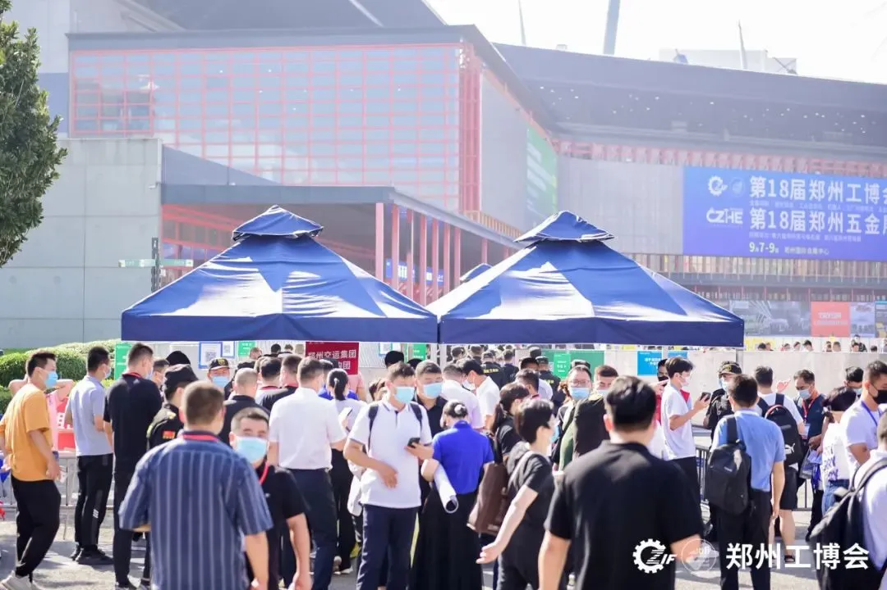
2023第19届郑州工业装备博览会（以下简称“郑州工博会”）将通过不断做大展会规模、做强影响力、创新展会内容、提升服务水平等运作模式，继续匠心打造郑州工博会成为我国中西部工业会展首要平台，中西部先进智能制造业高端交流平台，中国工业发展——中原权威信息发布平台，助力中国先进工业制造立于全球先进工业舞台。
2023第19届郑州工博会设立机床展、激光钣金展、工业自动化展、机器人展、工业互联网展、五金机电展主题展区，展会规模近65,000平方米，2000家业内知名企业参展，集中展示先进制造装备、整体解决方案、柔性制造单元、智能制造系统、数字化工厂等产业链创新技术，预计将吸引60,000专业买家参观。
主办单位：
中国机械工业联合会
中国机械工程学会
天津振威国际会展集团股份有限公司
郑州海名汇博会展策划有限公司
承办单位：
郑州振威海名海会展有限公司
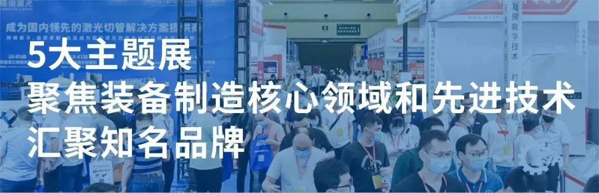
机床展
1、金属切削机床：数控机床、加工中心、车床、铣床、镗床、镗铣床、钻床、磨床、刨床、锯床、拉床、雕刻机、电加工/线切割机床、金属切削机床、齿轮加工机床、专用机床等；
2、激光切割、钣金设备、锻压机械：激光切割机（大、中、小功率）、打标机、焊接机；冲压机床、金属薄板切割机床、数控冲床、水刀、液压机、剪板机、折弯机、卷板机、弯管机、铆接机及周边设备等；
3、机床功能部件、工具及附件类：刀刃量具、工装夹具、卡盘、磨料磨具、测量设备、数控系统、机床电器、切削油、润滑油、机床附件、自动化控制及制造业信息化解决方案等；
工业自动化展
1.机器人技术：焊接/搬运码垛/协作等机器人本体；及其适用于行业应用的整体解决方案；核心部件；机器视觉；
2.生产及过程自动化：组装及搬运，工业影像处理系统；运动与控制系统；网络和现场总线系统，嵌入式系统；工业自动化数据获取及辨别系统；智能传感与连接技术；PLC、触摸屏、工业PC、工业测量技术与仪器仪表；传动和机械驱动系统；空压机技术与设备；3.电气系统：变压器；电池和不间断电源；伺服电机、变频器；电气开关，线束，电力电工测试和检测设备；自动装配设备；
4.新一代信息技术与应用：人工智能、IC&物联网、5G+工业互联网；数字基建；智能工厂；工业品电商与数字化供应链；工业软件；3D及激光打印技术与服务；
机器人展
1.机器人本体：协作/SCARA/装配/直角坐标/复合机器人等。
2.行业应用整体解决方案：汽车/3C/食品饮料/环保/铸造/智能物流等细分行业应用、系统集成方案。
3.相关核心零部件：控制器、伺服电机、传感器、驱动系统、RV/谐波/精密减速器、线束、工装夹具/快换装置。
4.机器视觉系统及方案：视觉装配及检测系统、精密视觉筛选机、图像处理系统。
工业互联网展
工业互联网网络互联，标识及信息采集，工业互联网平台，硬件设备，工业软件及综合解决方案，工业互联网安全，数字化工厂，工业互联网产业应用；
五金机电展
五金机电、手动工具、电动工具、焊接设备、劳保防护。
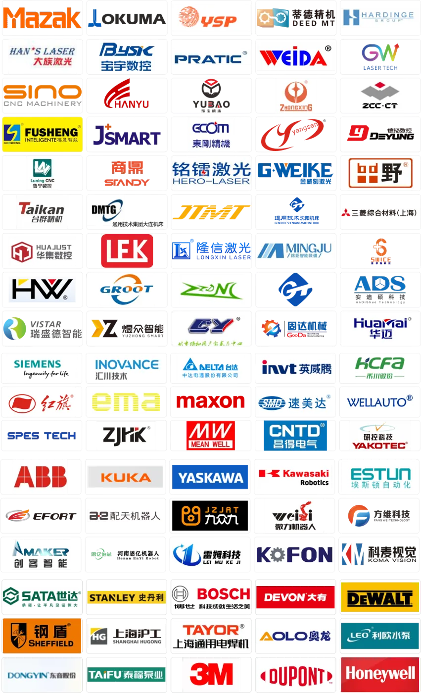
2023郑州工博会扩大专业观众辐射范围，立足河南，辐射山东、河北、陕西、山西、安徽、湖南、湖北等周边省市，通过百度、抖音、微信、头条等平台及行业媒体进行全网集中覆盖，精准触达业内人群超1000万人次；导入优质行业资源，与30+买家行业协会建立长期战略合作及全年度紧密互动；走访200+产业集聚地、园区、市场，精准把握展商和观众需求，锁定重点行业，邀请邀请决策层；百名客服一对一电话邀约；数字化工具赋能1w+参展人员裂变邀约。多措并举，进行全方位观众邀约，切实保障企业参展成效，达成交易是我们唯一的追求。
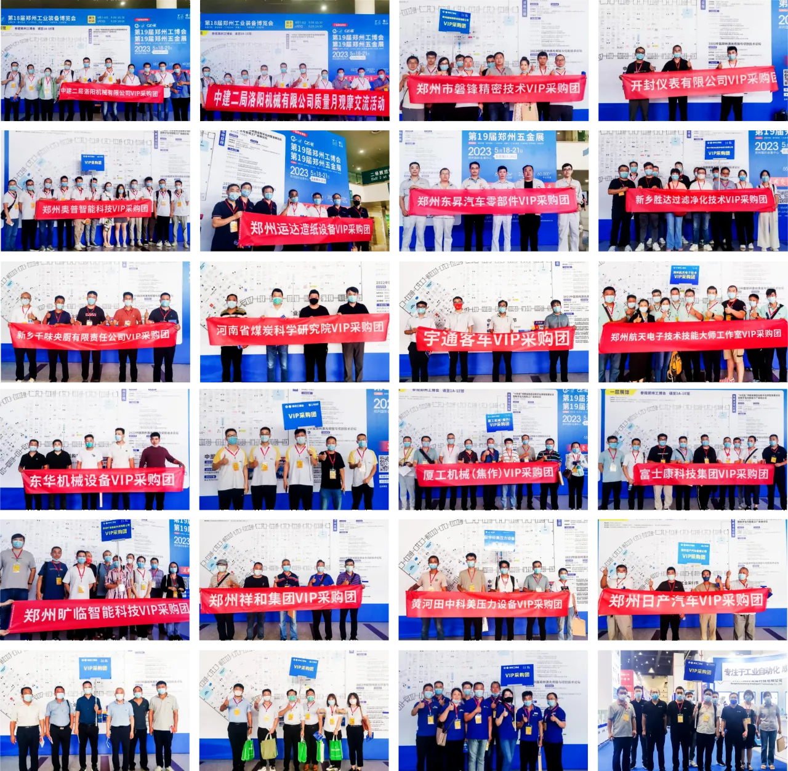
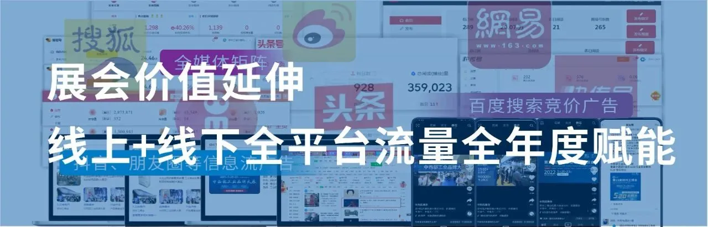
郑州工博会除四天展期的线下展示与商贸对接以外，展会依托振威+海名百万数据库资源优势，构建起全新的30w+私域流量池，同时依托公众号、抖音号、视频号、线上平台、微信社群等展会官方平台庞大粉丝用户，以展商产品和技术为核心的推广宣传，为展商提供全年度曝光传播，打造多维度营销矩阵；同时进行数字化营销，精准用户画像，投入大量广告费多视点宣传，百度、朋友圈、头条、抖音等广告，实现千万级的品牌精准曝光。
央媒+主流媒体
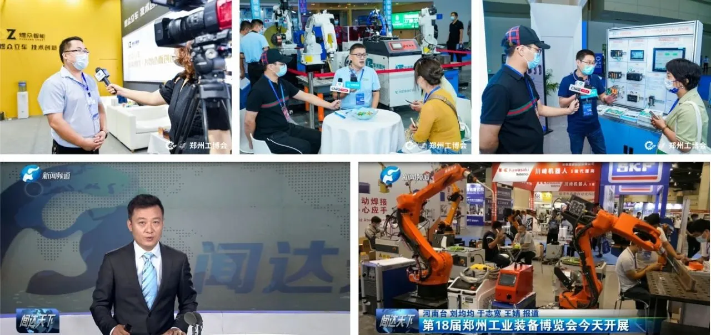
行业媒体

信息流广告
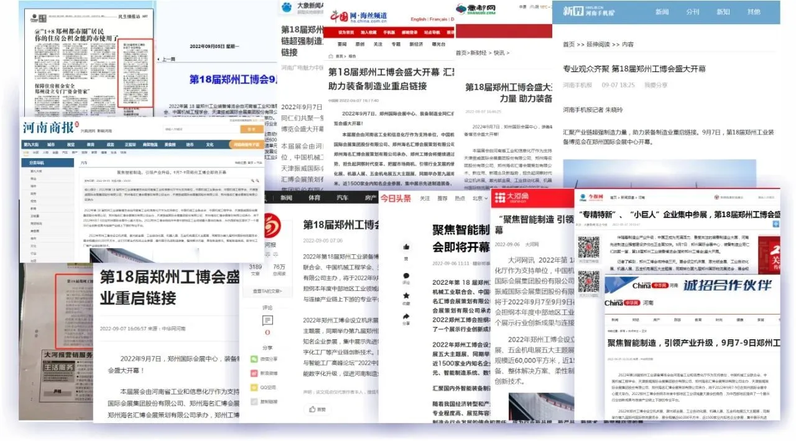
产业集聚地地推
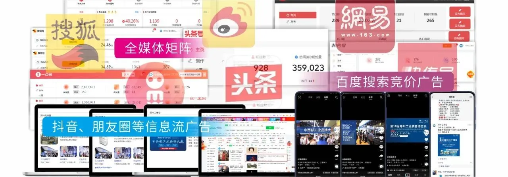
2023郑州工博会从高规格、树权威、引人气三个角度出发，立足行业破局、技术创新、产业驱动、行业引领、供需对接等方面着手，打造具有郑州工博会特色的高品质持续性的论坛及会议。展会同期，将举办10余场会议活动，力邀院士专家、企业领袖、行业精英共同参与，深入探讨行业发展前景及机遇，论坛涵盖以下主题：
2023河南省制造业数字化转型发展论坛将聚焦行业热点、传统产业的创新升级、工业装备领域的数智化之路，邀请众多行业专家和业内知名企业分享趋势洞见，把握产业脉搏，推动河南制造业高质量发展。
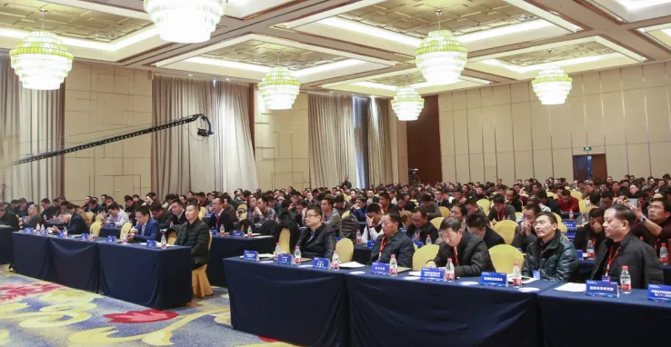
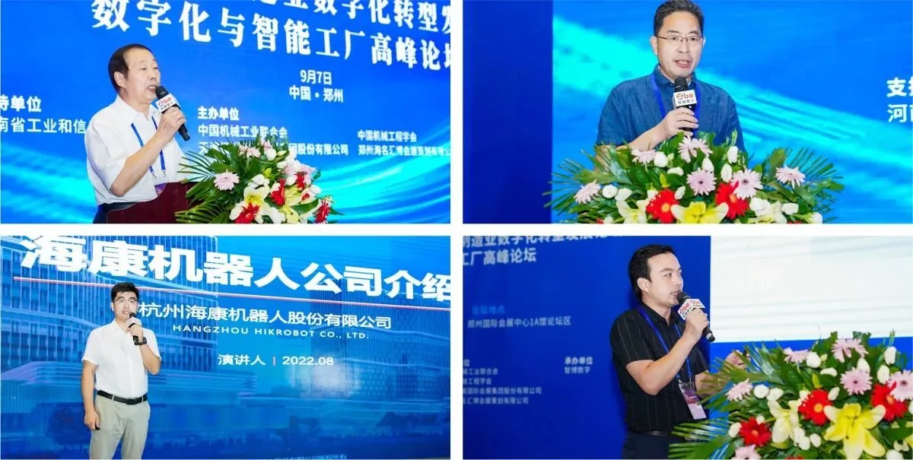
展会现场将设立“新产品、新技术交流会”，组织专场新品发布会及企业技术交流会，从行业的最新技术、最新趋势和产品行业动态等，共同洞察市场新需求、行业发展新趋势。
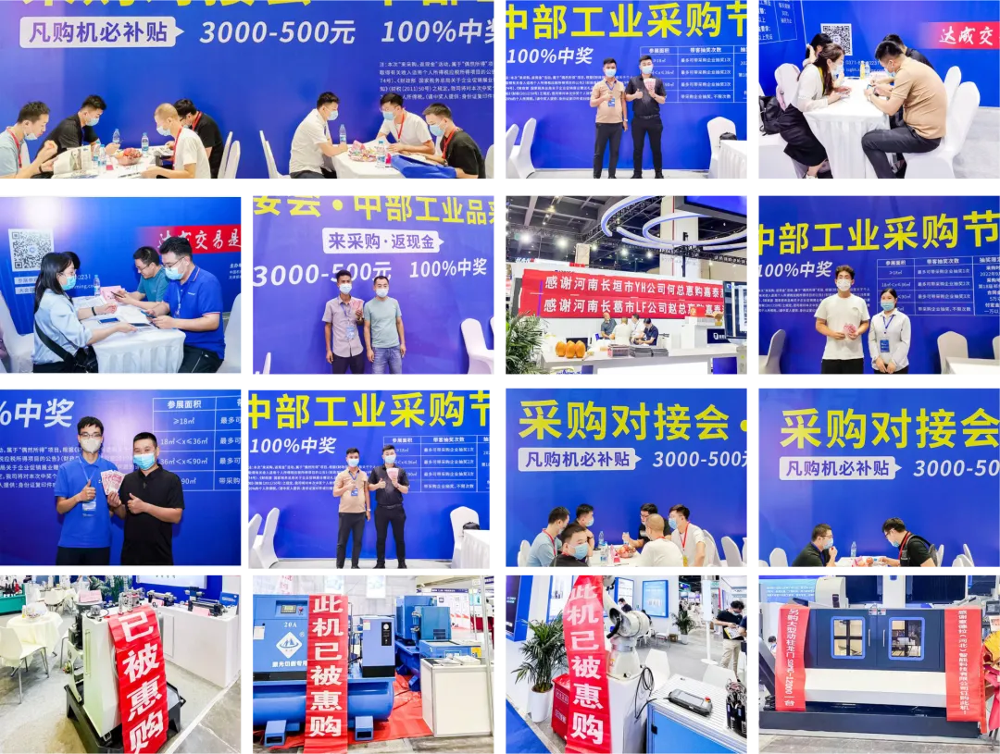